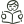
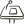

文学夜
晚上的轻松聚会。每人朗读一段喜欢的文字，聊最近在读的书，交换书单。

Shakespeare's Cat Literature Club
一个立足墨尔本、面向澳洲及更广泛地区中文读者的公益文学社群。我们以读者成长为中心，通过共同阅读、线下交流、深度讨论、嘉宾分享、写作输出、跨文化文学活动和 AI 辅助探索，为热爱中文阅读、写作与文学交流的人，提供一个开放、包容、有温度也有深度的中文文学空间。
从读到一本书，走向理解一本书；从表达一种感受，走向形成一个观点；从参加一次活动，走向参与一个有生命力的文学共同体。

以读者为中心选书和讨论都从读者出发。没有考试，没有标准答案，第一次来的人和读了几十年书的人坐在同一张桌前。
气氛可以轻松，讨论不会敷衍。主持人提前备好问题，陪大家从「好看」聊到「为什么好看」。
 积极探索 AI 与阅读社群的结合
积极探索 AI 与阅读社群的结合试着用新工具整理笔记、对照译本、练习写作。工具会变，面对面说话的那份认真不变。
2026 年第三学期 · 10 月 5 日至 12 月 13 日 · 主题「故乡与远方」
让阅读走向更多年纪的人。
面向儿童、青少年、家长和中文老师，尝试亲子共读和分级书单，让在澳洲长大的孩子也愿意读中文书。

面向老年读者，用大字书、朗读会和白天的小组聚会，找到适合他们的阅读与交流方式。

读后感、散文、诗、小说的片段，只要是你自己写的，都欢迎寄给我们。每学期挑选几篇，刊登在网站和公众号上，也会在文学夜里请作者读给大家听。
投稿不收费，也不设门槛。第一次写东西的人，同样欢迎。
看看怎么投稿立足墨尔本，面向澳洲和更广地区中文读者的公益文学社群。2025 年创立。
认真读完一本书，和认真听完一个人说话，用的是同一种耐心。我们想把这份耐心，留在墨尔本的一张长桌上。

莎士比亚的猫文学社由几位在墨尔本生活的读书人发起。我们以学期为单位安排阅读，每学期定一个主题，读两三本书，办六场左右的活动：线下读书会、文学夜和线上嘉宾讲座。
来的人里，有刚落地的留学生，有下班赶来的上班族，也有来澳洲陪伴孙辈的长辈。大家读同一本书，说各自的理解，不比谁读得多，只看谁说得真。
墨尔本是联合国教科文组织认定的「文学之城」。
选书和讨论都从读者的感受出发。不考试，不打分，第一次来的人和读了几十年书的人坐在一起。

讨论可以轻松，但不敷衍。主持人会提前准备问题，帮大家从「好看」走到「为什么好看」。

尝试用 AI 整理笔记、对照译本、辅助写作。面对面的交流，始终是读书会的核心。

三个模块每学期都在进行，两个还在筹备。点开一本书脊，看看它是做什么的、多久一次、在哪里办。
晚上的轻松聚会，是认识文学社最容易的入口。每人带一段喜欢的文字，诗、小说、歌词、家书都可以，朗读三分钟，再说说为什么选它。学期末的文学夜会换成写作分享，大家把这学期写下的短文读出来。
文学社最核心的活动。每学期精读两本书，长一点的分两次读完。主持人先做十分钟导读，然后分成五六个人的小组，围绕三个问题讨论，最后回到大组交换看法。部分场次改在线上，方便住得远的书友。

请作家、译者和研究文学的学者，聊一本书、一位作家，或者写作这件事本身。讲座都在线上，免费向公众开放，悉尼、布里斯班和国内的朋友也能来听。讲座录音征得嘉宾同意后，会整理成文字放进往期档案。

面向在澳洲长大的孩子、他们的家长和中文老师。我们想做分级书单、亲子共读和小读者的读书会，让孩子读中文书时不只是为了考试，也能读出乐趣。目前正在和几所中文学校聊合作。

面向来澳洲生活或探亲的长辈。白天的小组聚会，大字版的读物，有人领读的朗读会，书里的故事常常会引出他们自己的故事。我们希望在社区中心和长者活动室里，找到适合他们的读书方式。
文学社不以营利为目的，所有活动由志愿者组织。读书会、文学夜和讲座以免费为主，偶尔需要分摊场地或茶点费用时，会在报名时写清楚每一笔用在哪里。
感谢 Nunawading Community Hub 长期为读书会提供场地，也感谢每一位带着书和问题来的书友。
组织架构和注册名称、编号确定后，会在这里和公众号同时发布。
第三学期从 10 月 5 日到 12 月 13 日。六场活动，全部免费，面向公众开放，报名方式和临时调整以公众号为准。
离开家的人，读起写故乡的书来总是格外认真。这学期读两位东北女作家。把鼠标放在书上，可以看到读书会笔记。

用孩子的眼睛写东北小城里的人和事。祖父的后园明亮得像一幅画，小城里的人却一个接一个被风俗吞掉。

一位九十岁的鄂温克老人，在一天之内讲完族人的百年迁徙。森林、驯鹿、萨满，和一个正在消失的世界。
还有别的问题，在公众号留言就好，一般当天回复。

 Nunawading Community Hub
Nunawading 站 · 步行约 10 分钟
Nunawading Community Hub
Nunawading 站 · 步行约 10 分钟
Nunawading
Community Hub
96-106 Springvale Rd, Nunawading VIC 3131
火车：Belgrave / Lilydale 线 Nunawading 站，步行约 10 分钟
公交：273、902 路 · 场馆约有 200 个停车位
墨尔本东区的社区空间，地点随报名确认一起发送。
Zoom，报名后收到链接。
按学期整理，记下一起读过的书和说过的话。
读得多还是少、快还是慢，十几岁还是七十岁，都有适合你的方式。
他们第一次来的时候，也有点紧张。以下几段话来自往期活动后的留言，征得同意后整理，名字用的是他们在群里的称呼。
我书没读完就去了，本来想坐在角落只听。结果小组里一位阿姨问我怎么看福贵，我说着说着就停不下来了。
来澳洲带孙子，白天家里只有我一个人。读书会让我又有了可以聊书的朋友，她们叫我王老师，我很高兴。
下班开四十分钟车过去，进门就有人递茶。那天聊白流苏聊到快六点，回家路上一直在想她到底赢了没有。
以上留言为原型示例，正式上线前替换成书友授权的原话。

微信群二维码七天就会过期，所以请先通过公众号联系。
搜索「莎士比亚的猫文学社」。
附上你的称呼。
管理员一两天内拉你进群。
在公众号留言「志愿者」和想做的岗位，我们约你聊十五分钟。碰一下书签试试。
订场地、签到、控制流程
每月 4 至 6 小时提前读书，准备三个好问题
每场约 5 小时海报、公众号排版、小红书
每月约 3 小时现场拍照，征得同意后发布
每场 2 至 3 小时写活动回顾，整理往期档案
每月约 3 小时网站、报名表、线上会议
按需没找到答案，就在公众号留言。
文学社是公益社群，合作以公益与文化交流为出发点。
同城的读书会、出版社、学校、图书馆和文化机构，都欢迎来信。
 读书会
读书会联合选书，轮流主持，互相开放活动名额。同城的中文、英文读书会都欢迎。
 致 读书会
致 读书会 作家与出版
作家与出版新书分享、译者对谈、读者见面会。
致 作家与出版学校与教育中文学校的课外阅读、亲子共读活动。
致 学校与教育 图书馆与书店
图书馆与书店社区文学活动、中文书展、主题书单。
致 图书馆与书店 公益与文化组织
公益与文化组织多元文化节、长者中心的朗读会。
致 公益与文化组织大多数合作从一次简单的聊天开始。下面是一次合作通常要走的四步，条带的长短大致就是每一步花的时间。我们是志愿者团队，回复可能慢一两天，但每封信都会认真读。
来信第 1 天写邮件或在公众号留言「合作」，说说你们是谁、想一起做什么、大概在什么时候。
见一面第 1 周线上或线下聊半小时，看看双方的读者是否合适，时间和场地能不能对上。
定方案第 2 至 3 周一起确定书目或主题、活动形式、宣传分工和报名方式，写成一页纸的方案。
办活动与回顾活动当天和之后一周活动结束后，我们写一篇回顾，发在公众号并收进往期档案，也送一份给合作方。
伙伴的标志待正式授权后替换，下面是示意。
也可以直接写邮件，或在公众号留言「合作」。
hello@example.org读完一本书，心里总有话想说。写下来寄给我们，每学期挑选几篇刊登在这里和公众号上，也会在文学夜请作者读给大家听。
读完《呼兰河传》那一周，林间在读书会上说起了外婆的阳台。萧红写祖父的后园，她写外婆的坛子，写一个人怎样把日子腌进时间里。编辑组读完一致决定，把它放在这学期的第一篇。
编辑手记：文章不急着抒情。坛子、青石、晒太阳的秋天，事情一件一件摆出来，想念就在里面了。左边的稿纸可以翻页，四页读完就是全文。
看看往期刊登数字为原型示例。
篇幅只是参考，写短一点没关系。只要是你自己写的、和阅读或生活有关的中文文字，都可以试试。
读完一本书，写下你最想和别人说的那件事。不必面面俱到，抓住一个人物、一句话、一个问题就好。
800 至 3000 字故乡、移居、家人、在墨尔本的日常。真实的经历和细节，比漂亮的句子更动人。
1000 至 4000 字新诗、旧体诗都可以。一次最多寄三首，请注明写作时间和地点。
每首 40 行以内
短篇小说，或者长篇里能单独读的一章。请附一段一两百字的说明，交代前后发生了什么。
5000 字以内编辑组由三位志愿者轮流值班。收到稿子会先回一封确认信，一周内给出是否刊登的答复。没有入选的稿子，我们也会写几句读后的意见。
Word 文档或直接贴在邮件正文里，标题、署名、栏目写在最前面。
邮件标题写「投稿 + 栏目 + 篇名」，例如「投稿 散文 外婆的腌菜坛」。
两三天内回一封确认信，告诉你稿子交给了哪位编辑。
一周内答复。入选的稿子可能会提出小的修改建议，改不改由你决定。
刊登在网站和公众号，学期末的文学夜会邀请作者上台朗读。
按刊登时间排列，这里放的是每篇的开头。完整的文章都发在公众号上，搜索篇名就能找到。
有拿不准的地方，在公众号留言问我们就好。
邮件标题写「投稿 + 栏目 + 篇名」，正文里留一个方便联系的称呼。不用微信邮件的朋友，也可以在公众号后台留言「投稿」，编辑会把邮箱发给你。
submit@example.org投稿邮箱为占位，正式上线前替换。
原型示例文字，上线前需与实际使用的服务核对。
网站本身不设注册和报名。只有你提交合作表单时，才会收集称呼、机构、邮箱和留言。活动报名在公众号完成，适用微信的隐私政策。
只用于回复你的咨询，不出售，不用于推广，不转交第三方。
合作沟通结束后保留一年，之后删除。你可以随时要求提前删除。
如使用访问统计、嵌入服务或 Cookie，会在此列明服务名称及关闭方法。
活动照片和成员作品征得同意后才发布，可以随时要求撤下。涉及未成年人须经监护人同意，且不公开可识别身份的细节。
通过公众号留言，或写信到对外联系邮箱。